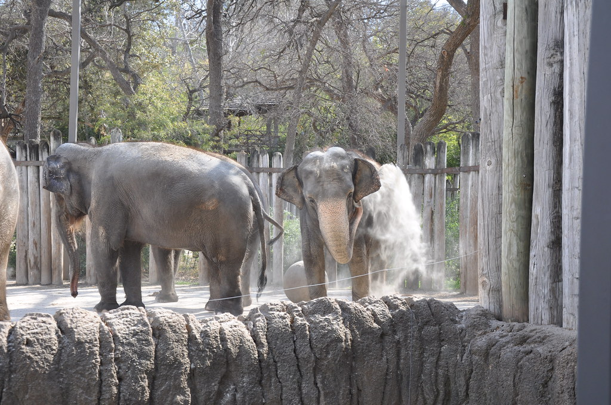
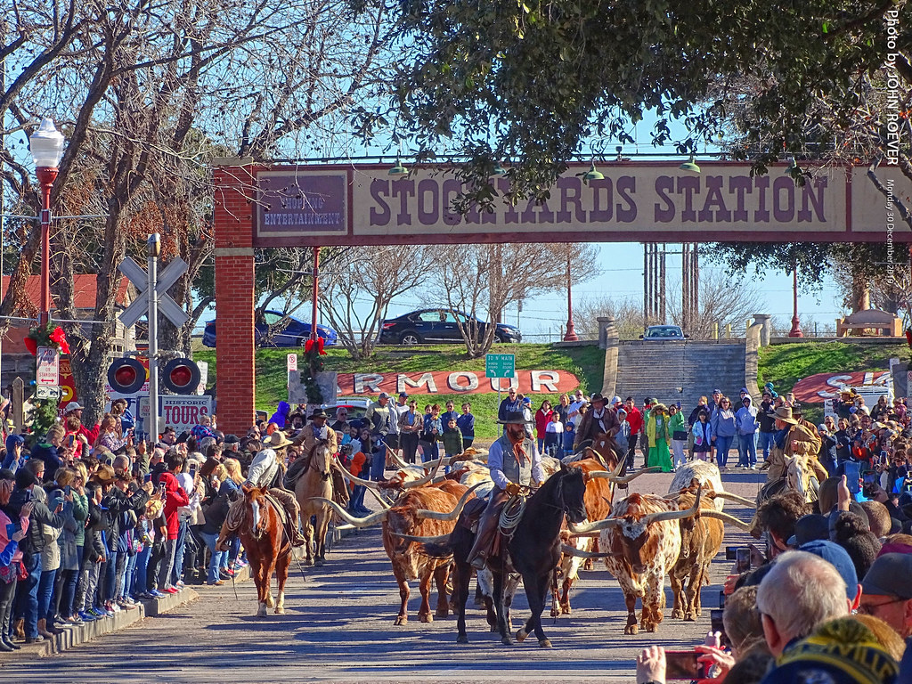
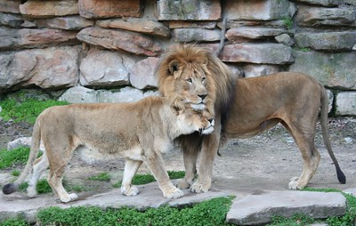

Blog Posts
Zoos in Fort Worth, Texas
Fort Worth Zoo is the number one spot on the must-visit destination list in the United States. It is not just the top most recommended for the locals in Texas, but tourists also visit the Zoo. It is one of the oldest zoos in Texas, and it is still operating today, and it was in the year 1909 that it started operating. Fort Worth Zoo prepared a lot of fun and exciting things for its guest! You can enjoy the exhibits inside the Zoo, and visitors can have an up-close interaction with the animals. You can visit the Zoo any day around 10 in the morning and close at 5 pm. There is no age limit inside the Zoo because everyone is welcome to experience and enjoy the Wildlife.
Read more...
Fort Worth Stockyards Stables
Have you ever seen a real cowboy before or ridden a horse? Fort Worth Stockyards Stables offers a great deal for people who love horses and are excited to ride one. You can even watch the cattle drive and attend it because their usual time is around 11:30 am and 4:00 pm. Visitors can look around the Stables as much as they want as they create memories and experience Wildlife. You can also pet the animals and experience the Stockyards Stables' Stagecoach rides and Carriage Rides. If you are hesitant to ride a horse, worry no more! Forth Worth Stockyards Stables ensures you are safe because they will provide the guests with someone to help before they saddle up and ride the horses along the Trinity River. Address: 157 E Exchange Ave, Fort Worth, TX 76164, United
Read more...
Zoos in Lufkin, Texas
Are you fond of picnics with lovely views? Ellen Trout Zoo offers a beautiful picnic place where you can bring food according to your liking with animal viewing. Although Ellen Trout is a small zoo, many people visit Ellen Trout Zoo, which gets about 150,000 visitors a year. The Zoo offers a lot to see s such as lions and Jaguars, and you could also experience Wildlife in a way you could not imagine. Aside from seeing fantastic animals, you will enjoy eating exquisite delicacies that you and your family prepared. Isn't it a great deal? You could visit Ellen Trout Zoo any day, and the visiting hours start at 10:00 am. The Zoo's last entry is 4:30 pm, and it closes at 5:00 pm. Address: 402 Zoo Cir, Lufkin, TX 75904, United States
Read more...